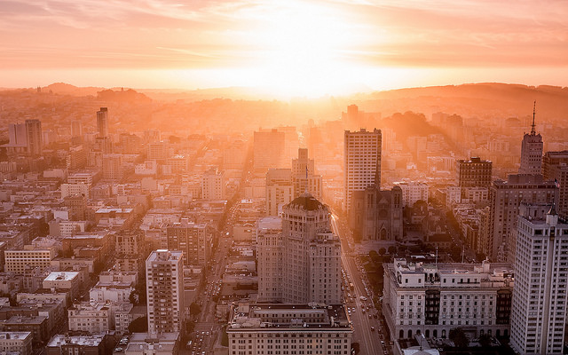
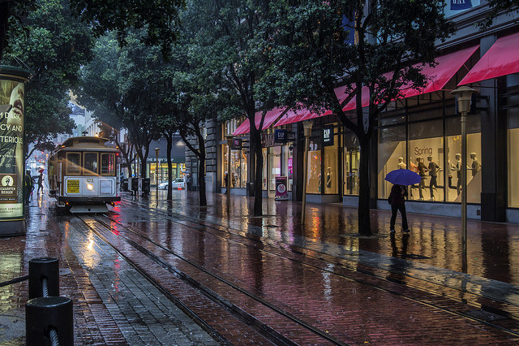
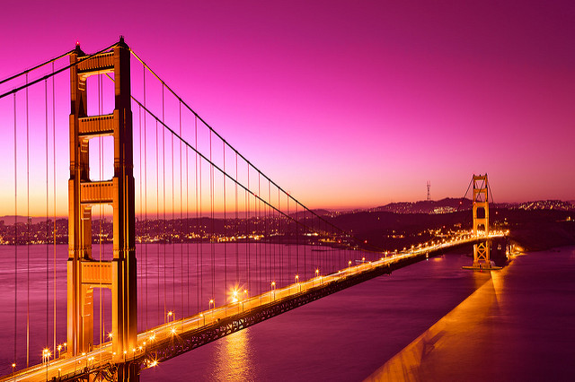
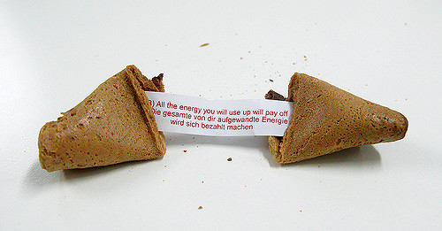
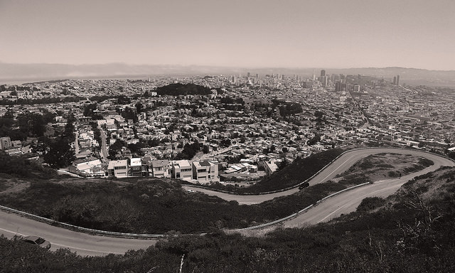
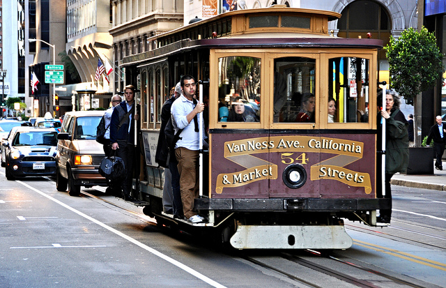
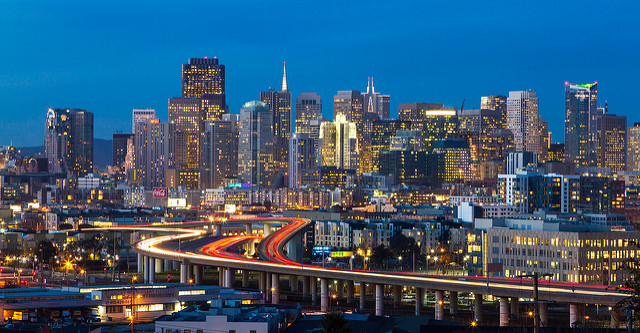
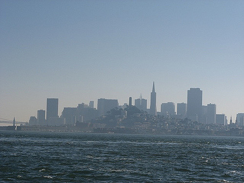
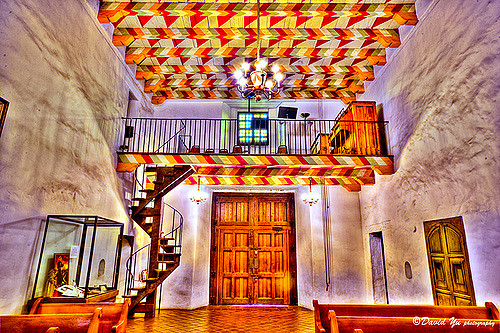
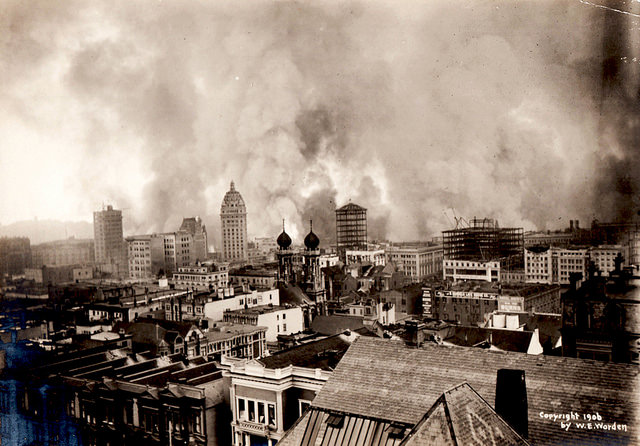

First things first, parking is a nightmare in just about every neighborhood in San Francisco and there are more than enough Ubers, Lyfts and cab drivers to get around easily. The Muni bus and rail lines will also take you everywhere for cheap, but they can be time consuming. If you plan on staying within the city limits, I recommend skipping the rental.

The weather really varies Because of San Francisco’s hilly landscape, the weather varies by neighborhood and by the hour. It could be sunny and 70 degrees in SOMA, but foggy and 50 degrees in the Marina. Wear pants and layers you can easily add and remove as necessary and you’ll be good to go.

Don’t miss the Golden Gate Bridge One of the most iconic symbols of San Francisco, the Golden Gate Bridge, is amazing and everyone should walk across the span to Marin at least once in their life. It’s a great way to take in views of downtown and surrounding bay, and the visitor’s center is also impressive.

The country's first Chinese immigrants came to San Francisco in 1848. In an act typical of San Francisco's cultural crazy quilt, the Japanese Hagiwara family invented "Chinese" fortune cookies at Golden Gate Park's Tea Garden.

A city built on 43 hills will surely have steep, curving streets. Vermont Avenue between 22nd and 23rd is "crookedest," and Filbert between Hyde and Leavenworth is steepest at 31.5 degrees.

San Francisco cable cars are the country's only rolling National Historic Landmark, and millions of people take a nine-mile-per-hour ride on them each year. At the Cable Car Barn Museum, you can watch enormous 500-horsepower electric motors turn the endless cable loops that keep them moving.

San Francisco has more than 200 historic landmark buildings, 11 historical districts, and 14,000 Victorian homes. From Alamo Square, the city skyline is a modern contrast to Victorian "postcard row."

Alcatraz means pelican in Spanish. The rocky pelican's island in San Francisco Bay was a military fort before it became a prison.

Mission Dolores (whose official name is Mission San Francisco de Asis) is the oldest building in San Francisco, built in 1791. Two major earthquakes couldn't topple it, but tiny powderpost beetles almost did in 2000, chewing their way to international fame before they were stopped.

How big was the 1906 San Francisco earthquake? People didn't measure earthquakes with numbers in 1906, but here's a comparison: In the 1989 Loma Prieta Earthquake, 25 miles of it ruptured. Scientists say the 1906 quake was 16 times stronger than 1989. No matter how you measure it, that's big.